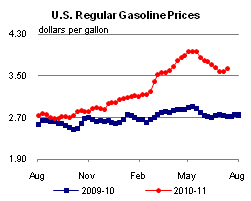
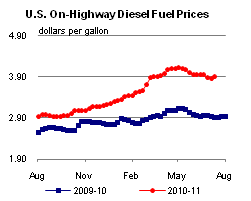
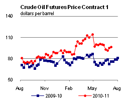
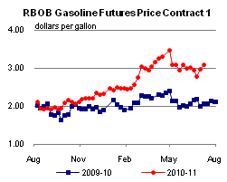
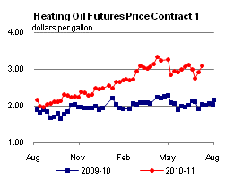
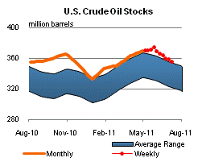
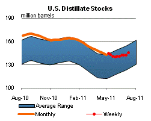
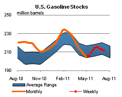
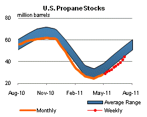

Released: July 13, 2011
Next Release: July 20, 2011
Release of strategic crude oil and product reserves and the short-term outlook
On its face, the June 23 announcement by the International Energy Agency (IEA) that its member countries would release 60 million barrels of crude oil and petroleum products from non-commercial strategic reserves into oil markets represents a tangible, transparent and precisely measured addition to world supplies over a clear, predictable time frame. In the United States, the identity of the successful bidders is well publicized, as are the amounts of oil they plan to acquire and at what price. But for all the certainty surrounding the IEA announcement, how does one go about measuring its market impact? This is a challenging task, as the oil market involves a great variety of factors, many of which could be potentially affected by the release in different ways. Assessing the true impact of the release would theoretically entail comparing post-announcement market conditions not only to preexisting ones, but also to what the market would have looked like had the announcement of releases not occurred. Breaking down potential effects into key components might bring some clarity to this question.
The simplest way of assessing the market impact of the release of oil from strategic storage is to consider the makeup of the barrels on offer and the response of potential buyers. The plan announced by the IEA entails making 60 million barrels of emergency stocks available to the market in 12 IEA member countries. The U. S. Department of Energy Office of Petroleum Reserves reported apparently successful offers for the purchase of a total of 30.6 million barrels of sweet crude oil at an average price of $5.58 per barrel below the price of Louisiana Light Sweet crude oil at the time of delivery. The crude oil is scheduled to be delivered in August, although purchasers may be able to take delivery during July if logistical arrangements can be made (additional details on the U.S. sale are available from the Strategic Petroleum Reserve Project Management Office). Japan and Korea will release a total of 11.4 million barrels of crude oil and products to the Asian markets and 9 European countries will release a total of 17.8 million barrels of crude oil and refined products.
The release responds to the ongoing disruption of oil supplies from Libya in the context of expected demand growth this summer. The U.S. Energy Information Administration's (EIA) Short-Term Energy Outlook (STEO), released July 12, reported the unrest in Libya had removed about 1.5 million barrels per day of light, sweet crude oil from the market since late February, totaling over 190 million barrels by the end of June. World liquid fuels consumption in the STEO grows by 1.7 million barrels per day from the second quarter 2011 to the third quarter 2011, while production by countries that are not members of the Organization of the Petroleum Exporting Countries (OPEC) falls by 0.2 million barrels per day. EIA expects Saudi Arabia will increase production over the next few months, but a significant part of that increase could be absorbed by growth in Saudi oil use to meet summer demand for electricity.
Attributing observed price changes since June 23 to the IEA announcement is difficult because of other factors that continually affect oil prices, such as changing expectations of world economic and crude oil consumption growth, uncertainty over oil supply disruptions, estimates of OPEC spare production capacity, and other physical and financial market factors (see EIA's What Drives Crude Oil Prices?). It is also impossible to know with certainty how prices would have behaved had the release not been announced. World crude oil prices initially fell following the IEA's June 23 announcement of releases from strategic reserves, but then rose above their pre-announcement levels in late June and early July.
The announced reserves release, which will inject new supply over the next few months, does appear to have lowered near-term prices relative to longer-term prices in the futures market. For example, before the IEA announcement there had been significant backwardation in the Brent crude oil futures contract with near month prices averaging about $5 per barrel higher than December 2012 contract prices over the first 3 weeks of June. Over the last week of June 2011 the spread between the near-month and December 2012 contracts averaged $0.37 per barrel. Over the first week of July, the backwardation in the market started to return with the spread rising to $1.20 per barrel by July 6.
By demonstrating the willingness of IEA member countries to draw on strategic reserves, the June 23 announcement might also have changed the market's assessment of the probability that oil prices might rise to much higher levels in the future. However, the evidence of attenuation of upside price risk in the West Texas Intermediate (WTI) futures and options markets is ambiguous. Between June 22 and June 24, the implied volatilities of nearby futures contracts rose slightly (the implied volatility of the December 2011 contract increased from 31.05 percent to 32.05 percent) while those of longer term contracts changed very little. The calculated probabilities that the price of crude oil for future delivery may exceed a given threshold price level have generally tracked the futures contract prices since the IEA announcement. There has been no indication that the upper boundary of the confidence interval surrounding futures prices implied by options valuations is being systematically pulled down.
EIA expects the release of strategic reserves pursuant to the IEA's June 23 announcement to reduce the expected draw on commercial stocks during the rest of 2011. Last month, EIA had expected commercial stocks held in Organisation for Economic Co-operation and Development (OECD) member countries, which have increased by about 9 million barrels over the first 6 months of 2011, would fall by 127 million barrels over the last 6 months of the year because of the projected second-half increase in world consumption. In yesterday's STEO, the forecast second-half OECD commercial stock draw was lowered to 64 million barrels.
The STEO emphasizes the uncertainty of any oil market forecast. Markets will be watching with interest as the IEA Governing Board reviews the impact of the actions announced on June 23 and decides on possible future steps.
Gasoline and diesel prices move higher
The U.S. average retail price of regular gasoline saw its biggest weekly increase in more than two months, adding six cents to reach $3.64 per gallon. The average price is $0.92 per gallon higher than last year at this time. The largest jump occurred on the Gulf Coast where prices were up nine cents on the week. Gasoline on the East Coast rose eight cents, followed by a gain of seven and half cents in the Midwest. Moving west, prices swung in the other direction. The West Coast saw prices down a cent and half; however, gasoline in the region continues to be the most expensive in the country at an average of $3.73 per gallon. In Rocky Mountains, prices moved a penny lower versus last week.
The national average diesel price added almost five cents this week, rising to $3.90 per gallon. The diesel price is $1.00 per gallon higher than last year at this time. The Gulf Coast, Midwest, and East Coast all saw similar price movements, with increases of almost six cents in each region. The West Coast average price was higher by two cents, moving back over the $4 per gallon level. Bucking this week's upward moves, the diesel price in the Rocky Mountains was down more than a penny.
Inventories of propane receive a large build
Propane stocks received their largest build of the season last week, growing by 3.1 million barrels to end at 44.6 million barrels. The Gulf Coast region added 1.5 million barrels of propane stocks, and the Midwest region gained 1.0 million barrels. Meanwhile, East Coast regional stocks were up 0.5 million barrels and the Rocky Mountain/West Coast regional stocks grew slightly. Propylene non-fuel use inventories represented 5.6 percent of total propane inventories.
Text from the previous editions of This Week In Petroleum is accessible through a link at the top right-hand corner of this page.
|  |  | ||||||
| Retail Data | Changes From | Retail Data | Changes From | ||||
| 07/11/11 | Week | Year | 07/11/11 | Week | Year | ||
| Gasoline | 3.641 | Diesel Fuel | 3.899 | ||||
|  |  | ||||||||||||||||||||||||||
|
 | ||||||||||||||||||||||||||
| *Note: Crude Oil Price in Dollars per Barrel. | |||||||||||||||||||||||||||
|  |  | ||||||
|  |  | ||||||
| Stocks Data | Changes From | Stocks Data | Changes From | ||||
| 07/08/11 | Week | Year | 07/08/11 | Week | Year | ||
| Crude Oil | 355.5 | Distillate | 145.0 | ||||
| Gasoline | 211.7 | Propane | 44.561 | ||||